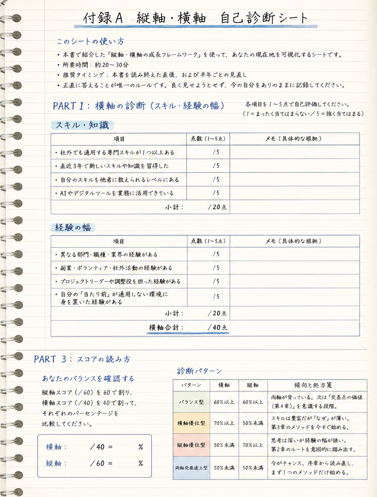

Chapter 01 · 成長には、二つの軸がある
横軸は、見える。
縦軸は、支える。
横軸はスキル・知識・経験の幅。縦軸はものの見方の深さ・価値観の成熟・思考の質。どちらが優れているという話ではない。車の両輪だ。
横軸だけの成長
→
続けると
→
燃え尽きに向かう
縦軸だけの成長
→
続けると
→
現実との乖離を生む
横軸 × 縦軸
→
交差すると
→
唯一無二の価値が生まれる
リスキリング
→
縦軸に届けば
→
何度でも適応できる
「スキルを付け替えることと、人間として成長することは、同じだろうか。」
Chapter 02 · 縦軸を深める5つのメソッド
「深める」ことは、
意図しないと起きない。
横軸の成長は、仕事を続けていれば自然に積み上がる。しかし縦軸は違う。経験から学ぶための「回路」を、意図的に設計する必要がある。
批判的内省
CRITICAL REFLECTION前提を問い直す
CRITICAL REFLECTION前提を問い直す
アンラーニング
UNLEARNING古い知識を手放す
UNLEARNING古い知識を手放す
メンタルモデル書換
MENTAL MODEL暗黙の地図を更新
MENTAL MODEL暗黙の地図を更新
多様なフィードバック
FEEDBACK自分の盲点を知る
FEEDBACK自分の盲点を知る
経験の質
QUALITY OF EXPERIENCE少し難しい領域へ
QUALITY OF EXPERIENCE少し難しい領域へ
実践は、週1回15分の「内省ノート」から。5つの問いに答えるだけでいい。
Q1今週、最も印象に
残った判断は？
残った判断は？
Q2なぜそう考え、
そう動いたか？
そう動いたか？
Q3その判断の前提は
正しかったか？
正しかったか？
Q4別の前提なら、
どう動いたか？
どう動いたか？
Q5ものの見方は
どう変わったか？
どう変わったか？
Chapter 03 · 自分の「現在地」を確認する
横軸の問いに答えやすく、
縦軸の問いに詰まっていないか。
同じ4項目の自己診断でも、何を積み上げてきたかで、答えられる問いはまったく違う。
横軸の確認 ＝ 直近3年のスキル習得・担当範囲・社外通用力。片翼だけが伸びていないか、まず自分の答え方を観察する。
新しいスキルを習得したか
0
担当範囲は広がったか
0
社外に通用するスキルか
0
ものの見方は変わったか
0
横軸への回答は淀みない
資格・担当範囲・社外通用力にはすぐ答えられるのに、「ものの見方が変わった経験」には言葉が詰まる。成長の重心が横に偏っているサイン。
Chapter 04 · 自己診断の問い
問いを変えると、
見える現在地が変わる。
横軸の問いには誰でも答えられる。縦軸の問いは、意図して振り返っていない限り、言葉が出てこない。
横軸の確認
直近3年で、新たに習得したスキルは？
担当できる仕事の範囲は広がったか？
社外に通用するスキルを持っているか？
→
縦軸の確認
「ものの見方が変わった」と感じた経験は？
複雑な問題を、構造を整理して考えられるか？
自分の「当たり前」を疑い、問い直したか？
「なぜこれをしているのか」を語れるか？
Chapter 05 · 縦軸・横軸 自己診断シート
スコアで見れば、
4つの型に分かれる。
横軸スコアと縦軸スコアを、それぞれ60%を基準に見る。自分がどの型かで、次に踏み出す章が変わる。
バランス型横60%以上 × 縦60%以上 ―― 次は交差点の価値（第4章）を意識する段階
横軸優位型横70%以上 × 縦50%未満 ―― スキルは豊富だが「なぜ」が薄い。第3章のメソッドを今すぐ
縦軸優位型縦70%以上 × 横50%未満 ―― 思考は深いが経験の幅が狭い。第2章のルートを踏み出す
両軸発展途上型横50%未満 × 縦50%未満 ―― 今がチャンス。まず1つのメソッドだけ始める
← 縦軸スコア横軸スコア →

巻末付録A・自己診断シート
本編には、実際に採点できるシートを収録
Chapter 06 · 人生100年時代のポートフォリオ成長
フェーズごとに、
成長の重心を移す。
常にバランスよく両軸を伸ばし続けるのではない。フェーズによって重心を移動させながら、長期的には両軸を育てる。
横軸のスキルは時代とともに陳腐化しうる。しかし縦軸は、老いない。
本質を見抜く力
時代が変わっても残る
複雑な状況を整理する力
AIが進化しても残る
人を動かす言葉と姿勢
何歳になっても育てられる
「横軸はスキルの掛け合わせを生み、縦軸はそれを思想に変える。」 二つの軸が交差するところに、何歳になっても「自分だけの価値」が宿る。
本ページで紹介した「縦軸・横軸の成長フレームワーク」「批判的内省」「アンラーニング」「#型人材」は、書籍『リスキリングだけでは足りない――「縦軸の成長」が、AI時代の唯一無二の武器になる』で、巻末付録（自己診断シート・内省ノート・成長実験シート・目標設定シート）とあわせて手順として解説しています。